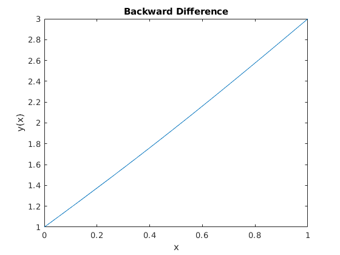
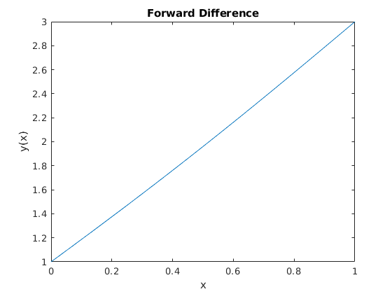
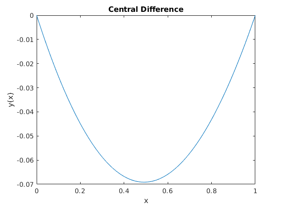
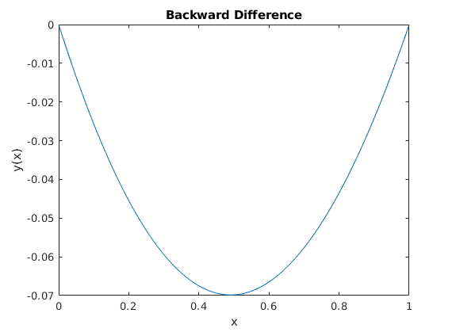
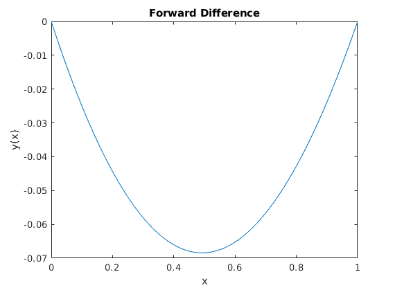

Q1(a)
The plot for solution using Central difference for the first order derivative is
The plot for solution using Backward difference for the first order derivative is
The plot for solution using Forward difference for the first order derivative is
Q1(b)
The plot for solution using Central difference for the first order derivative is
The plot for solution using Backward difference for the first order derivative is
The plot for solution using Forward difference for the first order derivative is
    